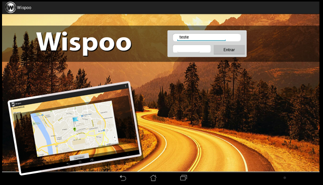

Wispoo
Academic Project

An academic project that helps drivers receive and insert road related information (crowdsourcing) through voice recognition in portuguese.
The major accomplishment was improving the Google Voice Recognition by introducing the possibility to recognize voice in a transparent and continuous way. The system is also designed to be very scalable.
Tech used:
Google Voice API
, NodeJS
, MongoDB
, Java
Click Here See demo!
Platforms: Android
PixelBoard is a social and collaborative drawing application. It
was inspired by the current social network phenomenon and
recent interest in drawing with mobile devices.
This app tries to be a massive social drawing app by having a
network with many users with the unique ability to interact with
each other through drawing.
It's not only dedicated to those who
are talented at drawing but also to those who simply like to share
their ideas with the world.
It works by having a big canvas where many people can draw at
the same time. The app makes it easy to work on such a big
canvas by having different levels of zoom, this also provides new
artistic opportunities to those who want to work collaboratively to
make something bigger than a normal display.